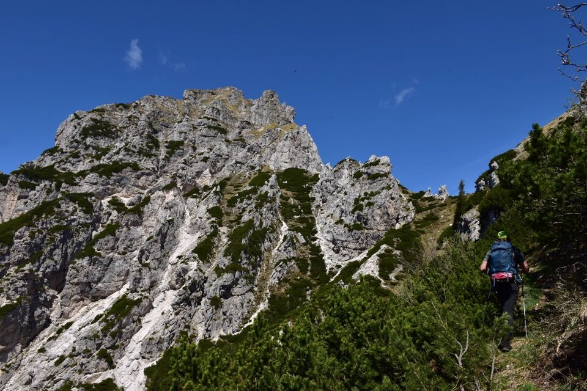
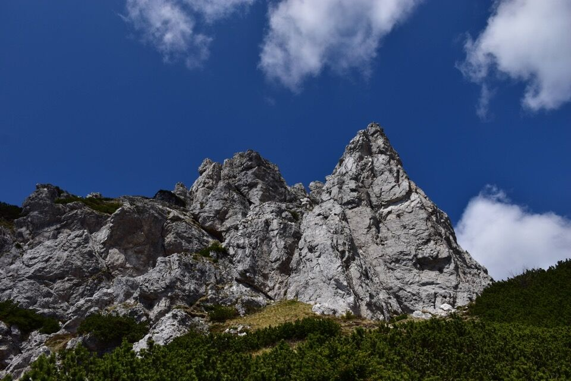
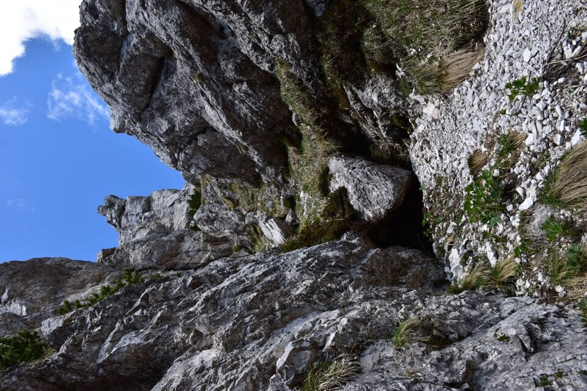
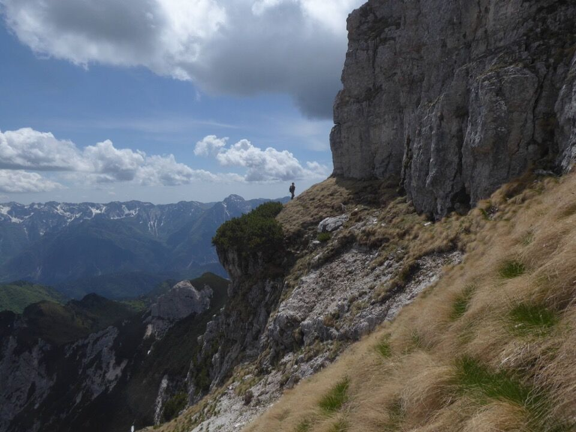
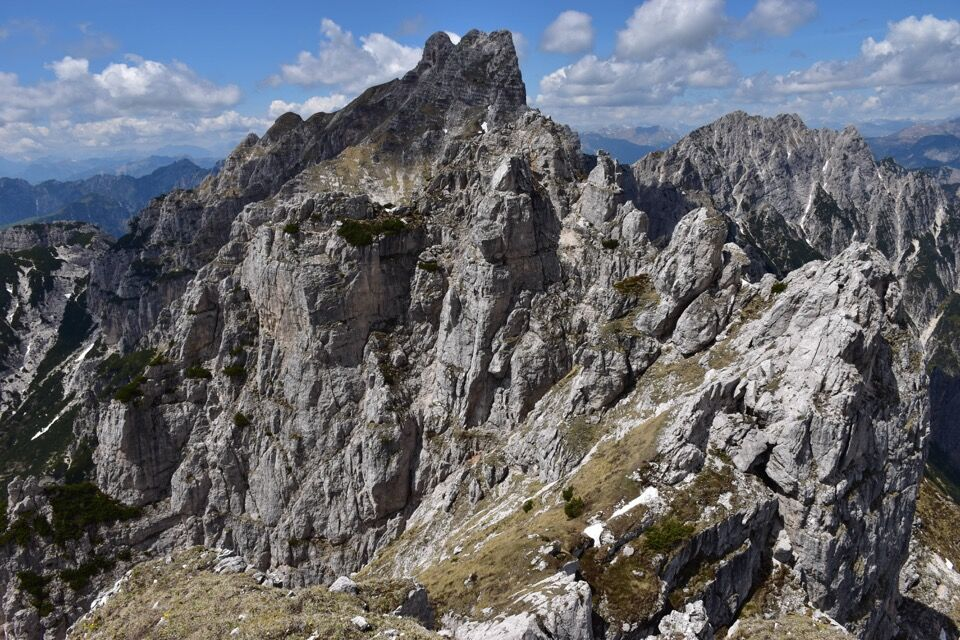
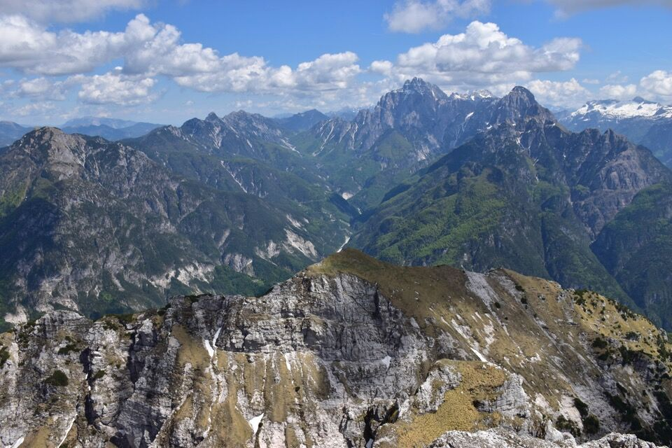
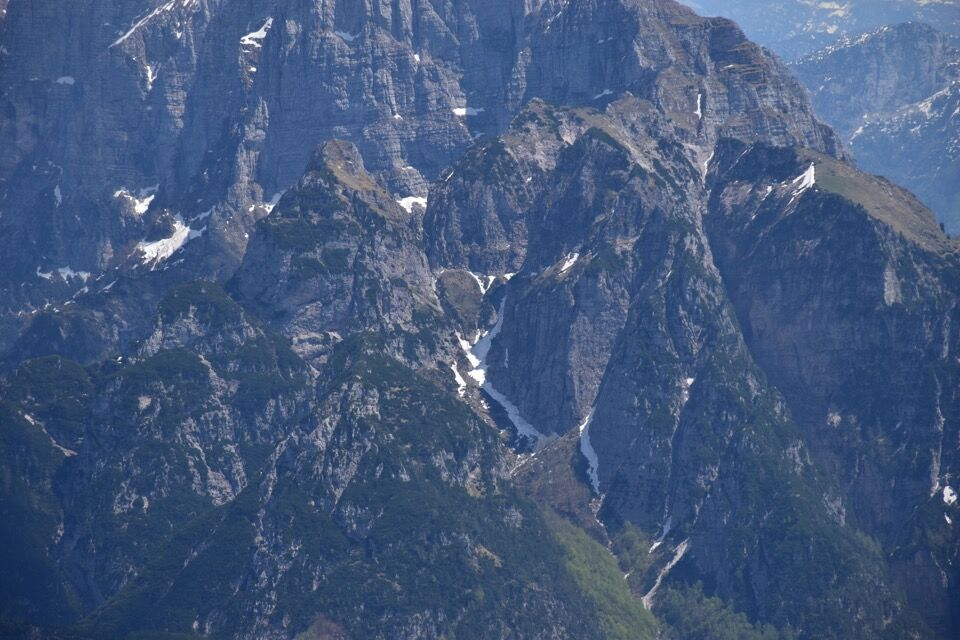
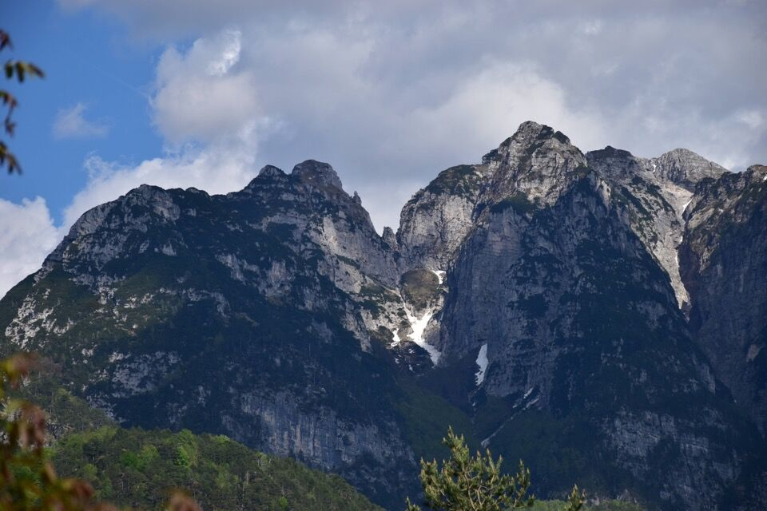

Da Plagnis su per la mulattiera del Plan da le Frate, più bella del CAI 427.
In foto il pittoresco attraversamento del rio dell'Orso.
In breve arriviamo sotto la forcella, dove la traccia ancora evidente dell'ex-CAI 427a si stacca verso sinistra.
L'ambiente diventa subito molto selvaggio; meriterebbe tornare per provare a percorrere l'ex CAI 427a fino alla forcella di Sot Cretis.

Individuiamo subito il canalino chiave (l'unico abbordabile) che permette di salire ai ripidissimi prati sommitali. L'uscita è di II° grado, sbucando su prati ripidi, impegnativo in discesa.
Dallo spallone sovrastante il canalino si segue una cengia che aggira il costone.
Infine per prati ripidissimi in cima, dret par dret.

Dalla cima verso il vallone del riu Simòn: si vede bene il ricovero militare Sot Cretis.
Verso la cima nord-ovest, sovrapposta al Çuc dal Bôr; sullo sfondo a destra il Cjavâlz. Non è che mi sia proprio tanto chiaro per dove passi la "ex via normale" al Cozarèl Alt...
Splendida vista verso la val Dogna! In basso il Montusel.
Il sottogruppo del Cimone: si notano in particolare lo Jôf di Miezdì (o di Cjadramaç) e lo Jovet Blanc. Il vallone al centro è quello del rio Lavinâl, mentre quello più a destra è il rio da lis Fontanis.
Torniamo indietro; Torgul è davvero un luogo paradisiaco.
Le due cime sullo sfondo sono lo Jovet Blanc a sx e lo Jovet a dx; il profondo vallone in mezzo è quello del rio da lis Fontanis.
Il rio Lavinâl, con lo Jôf di Miezdì a sx e lo Jovet Blanc a dx; fra i due la forca del Lavinâl (quella col torrione in mezzo), valico alpinistico fra i rii Lavinâl e Sfonderât, percorso per la prima (e unica?) volta da Dougan. Fa paura solo leggere la relazione sul Buscaini (27a)!
